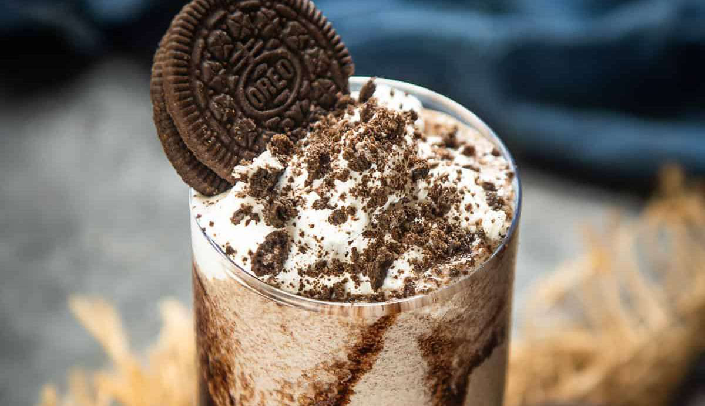

Oreo Protein Shake

2 minutes305 kcal • 35g protein • 9g fat • 35g carbs
Ingredients
- 120 ml Unsweetened Almond Milk
- 30 g protein powder
- 5 g PB2 Peanut Butter With Cocoa Powder (or regular powdered peanut butter/cocoa powder)
- 1.0 oreo Cookie
- 60 g Vanilla YoPro (or any low fat greek yoghurt)
- 2.5 ml Xanthan Gum
- 240 ml Ice
- Toppings
- 1.0 serving Sugar Free Chocolate Sauce
- 7.5 ml Light Whipped Cream
- 1.0 oreo Cookie Crushed
Instructions
Step 1: This ones real easy Blend all ingredients together for around 2 minutes in 30 second intervals, add more milk or ice to achieve your desired consistency.
Step 2: 2. Pour protein shake into cup and top with chocolate sauce, whipped cream and half a crushed oreo
Source PDF page 48